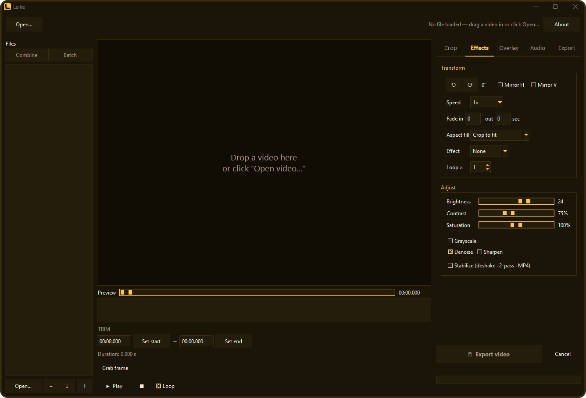

Crop & transform
Drag a crop box locked to 9:16, 1:1, 4:5, 16:9 — or free — then rotate, mirror, change speed, fade, aspect-fill, reverse, boomerang, or loop.
Free · Open source · Cross-platform
A simple, quick front-end for FFmpeg.
Drag in a video — crop, trim, resize, transform, adjust, overlay, and convert it. Then export a clip that plays everywhere.
No timeline soup, no sign-in, no upload. Open a file, make your cut, and export — Leike drives ffmpeg under the hood and gets out of your way.

Everything you need
Drag a crop box locked to 9:16, 1:1, 4:5, 16:9 — or free — then rotate, mirror, change speed, fade, aspect-fill, reverse, boomerang, or loop.
Scrub a live preview with a thumbnail filmstrip, cut losslessly with fast-trim, and save any frame as a still image.
Play with audio and a live effect preview — crop, rotation, colour, and fades all update as it runs.
Drop in a list of clips — join them into one video (trim and crop each; mismatched sizes get a blurred fill), or batch-export the whole list through one recipe.
Brightness, contrast, saturation, grayscale, denoise, sharpen — plus a two-pass deshake for shaky footage.
Burn in a text caption, drop an image watermark in any corner, or render a subtitle file onto the video.
MP4 in H.264, H.265, or AV1, plus WebM, animated GIF, or MP3 — with optional GPU (NVENC) encoding or a target file-size fit.
Mute, set the volume, or rip the audio out to MP3. Silent clips are detected and their controls greyed out.
Nothing uploads — your files never leave your machine. Reads source metadata to fix sideways phone videos and show fps / codec, and remembers your settings.
Get Leike
Windows, macOS, and Linux. Links always point to the latest release.
Latest release What's new ↗
Windows 10 / 11 · 64-bit
Leike-Setup.exe
Installs the app and ffmpeg together, with a Start-Menu shortcut and uninstaller. No admin prompt.
Download installerLeike-portable-win64.zip
No install. Unzip and run — ffmpeg is bundled inside. Great for a USB stick.
Download zipLeike.exe
Just the app. Use it if you already have ffmpeg on your PATH.
Download exemacOS & Linux
Leike-macOS-arm64.zip
Apple Silicon. Unzip and run the .app. Needs ffmpeg (brew install ffmpeg). Unsigned — first launch, right-click → Open.
Leike-linux-x86_64.tar.gz
x86_64 binary. Extract and run ./Leike. Needs ffmpeg (sudo apt install ffmpeg).
Prefer to inspect first? Browse all releases or read the source.